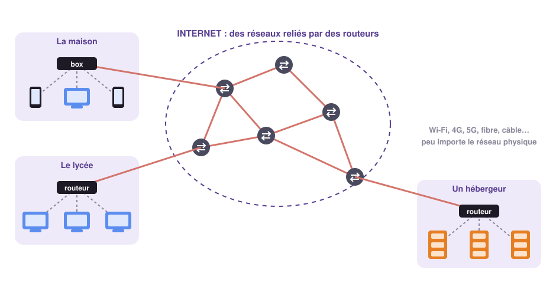
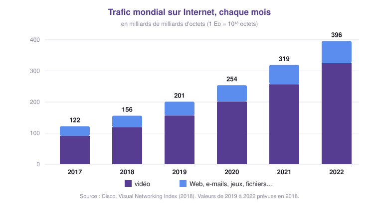
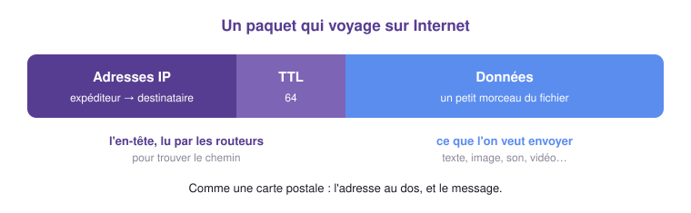
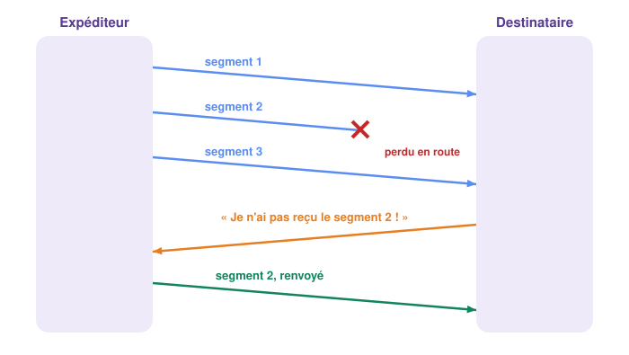

SNT · Thème Internet · Chapitre 1
Des câbles, des ondes, des paquets… et des règles communes à des milliards de machines
Introduction
Un réseau de réseaux : de quoi est-il fait ?
Câbles, ondes et débit.
L'explosion des échanges et la neutralité du Net.
Adresses IP, paquets, routeurs, TCP/IP.
🕰️Le saviez-vous ?
En 1999, avec l'ADSL à 128 kbit/s, il fallait 1 h 45 pour télécharger 100 Mo, c'est-à-dire une vingtaine de chansons en MP3. Avec la fibre, moins d'une seconde suffit.
SNT · Internet · Chapitre 1 — À la découverte d'Internet
2
Activité 1
À vous de jouer
Seul, sur une feuille, sans regarder la suite
Représente Internet tel que tu l'imagines : ce qu'il y a dedans, comment les choses sont reliées, où vont tes messages.
SNT · Internet · Chapitre 1 — À la découverte d'Internet
3
Archive INA · 1996
SNT · Internet · Chapitre 1 — À la découverte d'Internet
4
1
Ce qu'il y a vraiment derrière ton écran
Partie 1 · Internet

SNT · Internet · Chapitre 1 — À la découverte d'Internet
6
Partie 1 · Internet
📘Définition
Internet est un réseau de réseaux : il relie entre eux, à l'échelle mondiale, des millions de réseaux plus petits (maison, lycée, entreprise…) et permet à des milliards d'appareils de communiquer.
⚠️Attention
Internet est le réseau qui transporte les données. Le Web n'est qu'un des services qui l'utilisent, comme la messagerie, les jeux en ligne ou la visioconférence.
SNT · Internet · Chapitre 1 — À la découverte d'Internet
7
⭐ À retenir
2
Des câbles, des ondes… et un débit
Partie 2 · Réseaux physiques
L'information voyage dans un câble :
L'information voyage par des ondes radio : on parle aussi de liaison hertzienne.
SNT · Internet · Chapitre 1 — À la découverte d'Internet
10
⭐ À retenir
Partie 2 · Le débit
SNT · Internet · Chapitre 1 — À la découverte d'Internet
12
Partie 2 · Le débit
📘Définition
Le débit est la quantité d'informations transmise par seconde :
d = q ÷ Δt
🛠️Méthode
1 octet = 8 bits · 1 Ko = 1 024 octets · 1 Mo = 1 024 Ko · 1 Go = 1 024 Mo
Film de 2 Go, connexion à 100 Mbit/s :
SNT · Internet · Chapitre 1 — À la découverte d'Internet
13
Partie 2 · Exercices
Exercices
Page Exercices du site · correction vérifiée avec le professeur.
| N° | Niveau | Thème | Support |
|---|---|---|---|
| 1 | ★☆☆ | Les appareils de Chloé | ✏️ |
| 2 | ★☆☆ | Qui peut se connecter comment ? | ✏️ |
| 3 | ★☆☆ | Quel réseau physique choisir ? | ✏️ |
| 4 | ★★☆ | Écologie : 4G ou Wi-Fi ? | ✏️ |
| 5 | ★★☆ | Le débit depuis l'an 2000 | ✏️ |
| 6 | ★★☆ | Le film de Liam | ✏️ |
✏️ sur papier · 💻 sur ordinateur
SNT · Internet · Chapitre 1 — À la découverte d'Internet
14
3
Toujours plus de données… surtout de la vidéo
Activité 2
À vous de jouer

| En France | 2009 | 2019 |
|---|---|---|
| Nombre d'internautes | 30 millions | 57 millions |
| Part ayant un smartphone | 12 % | 81 % |
| Temps sur Internet par jour | 1 h 30 | 4 h 48 |
SNT · Internet · Chapitre 1 — À la découverte d'Internet
16
⭐ À retenir
Partie 3 · Exercice 7
Exercice
| Type de données consultées | Quantité échangée par heure |
|---|---|
| Vidéo 4K (très haute définition) | 7 Go |
| Vidéo HD (haute définition) | 3 Go |
| Vidéo SD (définition standard) | 0,7 Go |
| Réseaux sociaux | 0,156 Go |
| Navigation sur le Web | 0,020 Go |
SNT · Internet · Chapitre 1 — À la découverte d'Internet
18
Partie 3 · Exercice 7
Correction
SNT · Internet · Chapitre 1 — À la découverte d'Internet
19
Partie 3 · Neutralité du Net
Sur Internet, rien ne distingue à première vue un paquet de vidéo d'un paquet de musique ou d'un e-mail.
📘Définition
La neutralité du Net : les fournisseurs d'accès doivent traiter toutes les données de la même manière, quels que soient leur contenu, leur origine ou leur destination : ni ralentissement, ni priorité, ni supplément payant.
Principe fondateur d'Internet, protégé en Europe depuis 2015… mais régulièrement remis en cause.
SNT · Internet · Chapitre 1 — À la découverte d'Internet
20
Activité 3
À vous de jouer
Un opérateur propose deux forfaits…
Essentiel à 10 € : Web, e-mails et réseaux sociaux à pleine vitesse, vidéos limitées en basse qualité. Premium à 25 € : tout à pleine vitesse, et tes plateformes de streaming favorites en priorité.
Chacun prend position, argumente, puis on confronte les avis.
SNT · Internet · Chapitre 1 — À la découverte d'Internet
21
4
Adresses, paquets, routeurs… et TCP/IP
Partie 4 · Adresse IP
📘Définition
Une adresse IP est un numéro qui identifie de façon unique une machine connectée à un réseau.
| Version | Exemple | Nombre d'adresses |
|---|---|---|
| IPv4 | 193.51.24.124 nombres de 0 à 255 | ≈ 4,3 milliards |
| IPv6 | 2001:0db8:0000:85a3:0000:0000:ac1f:8001 | ≈ 3,4 × 1038 |
SNT · Internet · Chapitre 1 — À la découverte d'Internet
23
⭐ À retenir
C'est moins que le nombre d'humains, et bien moins que le nombre d'objets connectés. Épuisées depuis 2019 en Europe, elles sont peu à peu remplacées par IPv6.
Partie 4 · Paquets
Un fichier n'est jamais envoyé d'un bloc : il est découpé en petits paquets, qui voyagent chacun de leur côté.

SNT · Internet · Chapitre 1 — À la découverte d'Internet
25
Partie 4 · Routage
📘Définitions
Chaque routeur lit l'adresse IP de destination et confie le paquet à un voisin qui le rapproche du but. Le chemin n'est pas fixé à l'avance.
SNT · Internet · Chapitre 1 — À la découverte d'Internet
26
Activité 4
À vous de jouer
Avec le simulateur de la diapo suivante, ou sur le site (page « Comment voyagent les données ? »)
Le nombre affiché dans chaque paquet est son TTL : il diminue de 1 à chaque routeur.
SNT · Internet · Chapitre 1 — À la découverte d'Internet
27
Activité 4
À vous de jouer
SNT · Internet · Chapitre 1 — À la découverte d'Internet
28
Partie 4 · Routage
📘Définition
Le TTL (Time To Live, « reste à vivre ») est un compteur que porte chaque paquet, souvent fixé à 64 au départ, qui diminue de 1 à chaque routeur. Quand il atteint 0, le routeur détruit le paquet.
Pourquoi ? Pour qu'un paquet perdu, qui tournerait en rond entre des routeurs, n'encombre pas le réseau indéfiniment.
SNT · Internet · Chapitre 1 — À la découverte d'Internet
29
⭐ À retenir
Partie 4 · TCP

Avant l'envoi, TCP découpe les données en segments numérotés. À l'arrivée, il les remet dans l'ordre et redemande ceux qui manquent.
📘Définition
Un protocole est un ensemble de règles communes que les machines respectent pour communiquer, comme une langue partagée.
SNT · Internet · Chapitre 1 — À la découverte d'Internet
31
Partie 4 · TCP
SNT · Internet · Chapitre 1 — À la découverte d'Internet
32
⭐ À retenir
Partie 4 · Exercices
Exercices
Page Exercices du site · correction vérifiée avec le professeur.
| N° | Niveau | Thème | Support |
|---|---|---|---|
| 8 | ★☆☆ | Combien de chemins ? | ✏️ |
| 9 | ★★☆ | L'en-tête d'un paquet | ✏️ |
| 10 | ★★☆ | Combien de paquets ? | ✏️ |
✏️ sur papier · 💻 sur ordinateur
SNT · Internet · Chapitre 1 — À la découverte d'Internet
34
Activité 6 · sur ordinateur
À vous de jouer
Dans le Terminal de Windows (touche Windows, tape cmd, puis Entrée)
La commande ping envoie quelques petits paquets à une machine, qui répond à chacun : on mesure le temps d'un aller-retour.
ping qwant.fr. Relève l'adresse IP, les paquets envoyés et reçus, leur taille, les durées minimale, maximale et moyenne.ping www.govt.nz (Nouvelle-Zélande) et compare.ping qwant.fr : obtiens-tu les mêmes durées ? Quelle notion du cours cela illustre-t-il ?SNT · Internet · Chapitre 1 — À la découverte d'Internet
35
⭐ À retenir
TCP/IP n'offre pas de garantie temporelle : on ne sait pas combien de temps mettra un paquet.
Partie 4 · Exercices
Exercices
Page Exercices du site · correction vérifiée avec le professeur.
| N° | Niveau | Thème | Support |
|---|---|---|---|
| 11 | ★★☆ | Le voyage d'un paquet jusqu'en Nouvelle-Zélande (tracert) | 💻 |
| 12 | ★★★ | Assez d'adresses pour tout le monde ? | ✏️ |
| 13 | ★★★ | Le site est inaccessible ! | ✏️ |
✏️ sur papier · 💻 sur ordinateur
SNT · Internet · Chapitre 1 — À la découverte d'Internet
37
Bilan
À vous de jouer
Sur le site, page « Conclusion »
Un QCM de 12 questions, corrigé automatiquement.
SNT · Internet · Chapitre 1 — À la découverte d'Internet
38
Bilan
SNT · Internet · Chapitre 1 — À la découverte d'Internet
39